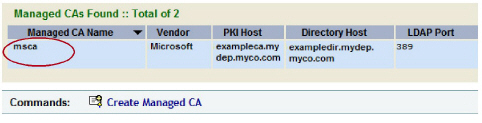
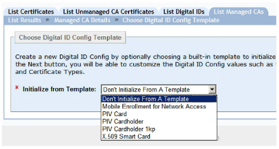
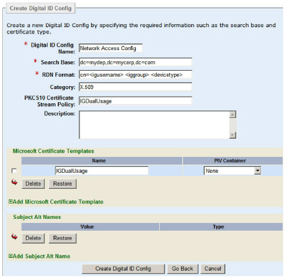
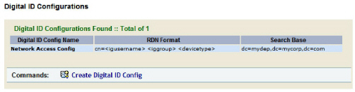

|
IdentityGuard Server 12.0 Administration Guide |
|
IdentityGuard Server 12.0 Administration Guide |
You must create a digital ID configuration in Entrust IdentityGuard. Follow the instructions below.
To create a digital ID configuration for use with a Microsoft CA
1. In the Entrust IdentityGuard Administration interface, on the List Managed CAs tab, click msca, or whatever your CA is called.

The Managed CA Details page appears.
2. At the bottom, click Create Digital ID Config.
The Choose Digital ID Config Template page appears.

3. Select Mobile Enrollment for Network Access.
See Digital ID types and formats for more information.
The other options are for smart credentials, and do not apply.
4. Click Next.
The Create Digital ID Config page appears, with several fields and options pre-filled based on the template you chose.
5. Fill out each field as follows.
Note: Many of items below are used as the building blocks from which to construct the user’s digital ID.
● Digital ID Config Name: Enter a globally unique name that describes your digital ID configuration. For example, Network Access Digital ID Config.
● Search Base: Enter the search base associated with your Microsoft CA.
● RDN Format: Leave it at cn=<igusername> <iggroup> <devicetype> unless you have a reason to change it. This field is used to calculate the first part of the user’s DN. (The second part of the DN consists of the search base.)
If you do decide to change the RDN format, ensure that you separate your variables with a space. For example, if your RDN format is:
cn=<uuid> <devicetype>
separate <uuid> and <devicetype> with a space.
● Category: Leave it at X.509 unless you have a reason to change it. Category defines the type of digital ID you are adding.
● PKCS10 Certificate Stream Policy: Leave it at the default of IGDualUsage. This is the certificate template you created in Step 6: Configure a Microsoft certificate template .
● Description: Optionally, enter a description for the digital ID configuration.
6. Under Microsoft Certificate Templates, leave the default of IGDualUsage. This specifies the certificate template you created in Step 6: Configure a Microsoft certificate template .
7. Leave the Subject Alt Names section empty.
The following image shows what a network access digital ID configuration might look like when configured with a Microsoft CA.

8. Click Create Digital ID Config.
Your managed CA page now includes your digital ID configuration at the bottom.
